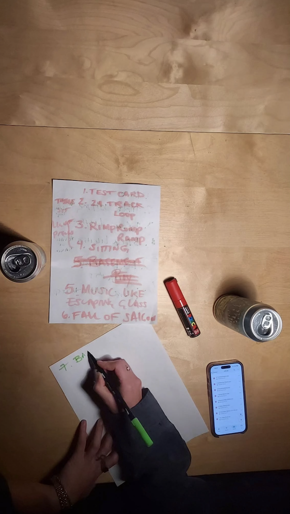
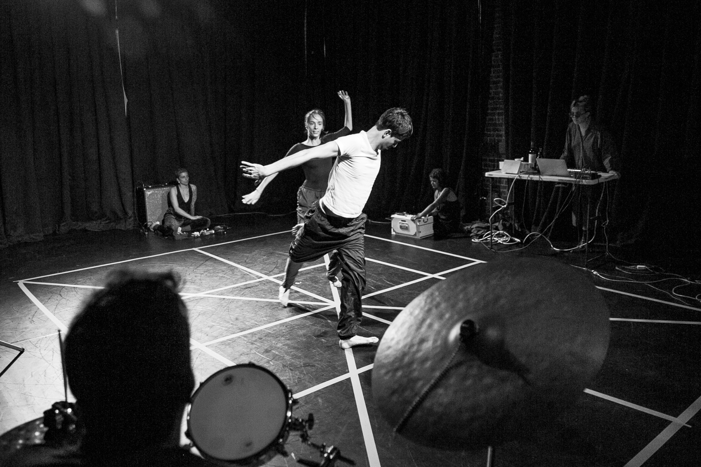

CAT. 001 / CURRENT WORK / 2026
this heat?
work in progress. an ongoing investigation into the music and methods of This Heat

01 / PERFORMANCE & PROCESSTHIS HEAT? / MARCH 2026
02 / CHOREOGRAPHIC SYSTEMQUADRANT / ST. MARK'S 2021THIS HEAT
STATUS: ONGOING
NYC / UK
PERFORMANCE / FILM / WRITING
ALL CHANNELSSTATUS: ONGOING
NYC / UK
PERFORMANCE / FILM / WRITING
OPEN ↗
DOCUMENTARY FILM IN DEVELOPMENT.
ENTER THIS HEAT ↗WORKING INDEX
PERFORMANCEMUSICFILMWRITINGRESEARCH
ORIGINAL DOCUMENTATION / PERFORMANCE & PROCESS / 2021–2026


A SITE FOR THE WORK, ITS METHODS, AND ITS UNFINISHED QUESTIONS. GO TO THE ARCHIVE ↗